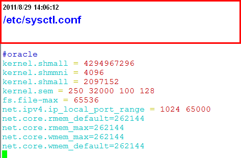
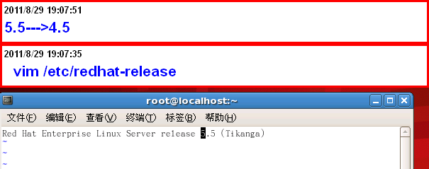
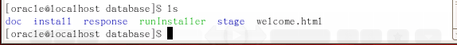
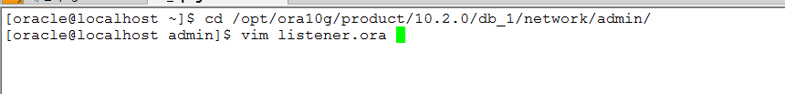
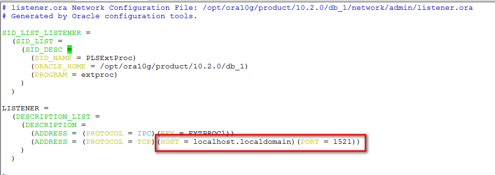

RHEL5.5 下oralce 安装¶
| 作者: | 李大双 ldshuang@gmail.com |
|---|
配置要求¶
- 硬件要求
- 软件
- Vnc配置
- 安装前配置
- 安装
- 导入数据
- Web服务器配置
硬件:
最小1G内存
硬盘不少于4G
/tmp最小400mb
Swap内存两倍
必备软件包:
Binutils
Compat-db
Conmap-libstdc++
Comtrol-center-
Gcc
Gcc-c++
Glibc
Glibc-common
Libstdc++
Libstdc++-devel
libXp
make
ksh
sysstat
setarch
Vnc配置:
服务端配置
客户端配置
开始安装，配置内核¶
代码:
#oracle config
kernel.shmmni = 4096
kernel.shmall = 2097152
kernel.sem = 250 32000 100 128
fs.file-max = 65536
net.ipv4.ip_local_port_range = 1024 65000
net.core.rmem_default=262144
net.core.rmem_max=262144
net.core.wmem_max=262144
net.core.wmem_default=262144
使用:sysctl -p: 重新加载并验证参数是否正确
设置shell调用限制¶

代码:
/etc/security/limits.conf
* soft nproc 2047
* hard nproc 16384
* soft nofile 1024
* hard nofile 65536
代码:
/etc/pam.d/login
#oracle
session required /lib/security/pam_limits.so
session required pam_limits.so
创建相关目录，用户组，用户¶
创建组:
Groupadd oinstall Groupadd dba
创建用户，密码:
Useradd –g oinstall –g dba –m oracle Passwd oracle
创建数据库目录:
Mkdir /opt/ora10g Mkdir /opt/ora10g/product Mkdir /opt/ora10g/oradata
更改目录属主:
Chown –R oracle:oinstall /opt/ora10g
配置oracle用户的环境变量¶
切换用户，编辑.bash_profile:
su – oracle
Vim .bash_profile
环境变量设置代码:
export TMP=/tmp
export TMPDIR=$TMP
export ORACLE_BASE=/opt/ora10g
export ORACLE_HOME=$ORACLE_BASE/product/10.2.0/db_1
export ORACLE_SID=jyjs
export ORACLE_TERM=xterm
export PATH=/$ORACLE_HOME/bin:$PATH
export LD_LIBRARY_PATH=$ORACLE_HOME/lib:/usr/lib:/lib64:/usr/lib64:/usr/local/lib64:/usr/X11R6/lib64/
export CLASSPATH=$ORACLE_HOME/JRE:$ORACLE_HOME/jlib:$ORACLE_HOME/rdbms/jlib
export LD_ASSUME_KERNEL=2.6.9
export NLS_LANG="SIMPLIFIED CHINESE_CHINA.ZHS16GBK"
umask 022
if [ $USER = "oracle" ];then
if [ $SHELL = "/bin/ksh" ];then
ulimit -p 16384
ulimit -n 65536
else
ulimit -u 16384 -n 65536
fi
fi
export LANG=en_US
使改变生效
修改操作系统版本号¶
Oracle 10g会检测你的操作系统版本，在5.5下安装程序不能安装。
开始安装¶
- 执行 runlnstaller安装,如有乱码：可更改环境变量为英文
- 安装路径
- oracle inventory directory(oraInventory)存储系统上安装oracle软件的详细清单。 默认就可以
- 安装企业版

- 检测环境是否符合oracle的要求,不行就改
- 创建数据库
- 数据库配置
- 详细的设置 字符编码设置成ZHS16GBK
- 邮件
- Oracle数据存储相关， 用操作系统的文件系统，第一个

- 备份相关，以后自己备份

- 密码
- 安装就可以了
- 安装完成
- 有两个脚本要在root下执行
还原数据¶
- 下载,用lftp 啊
- 解压
- 在oracle帐户下登陆：
- 创建两个数据库用户
创建用户theolenv
Create user theolenv identified by password; # password 更改密码
权限:
Grant create user,drop user,alter user,create any view,drop any view,exp_full_database,imp_full_database,dba,connect,resource,create session to theolenv;
创建用户resv2:
Create user resv2 identified by password;
权限:
Grant create user,drop user,alter user,create any view,drop any view,exp_full_database,imp_full_database,dba,connect,resource,create session to resv2;
创建表空间:
create TABLESPACE resv2 LOGGING DATAFILE '/var/ora10g/oradata/resv_01.dbf' size 2000m REUSE AUTOEXTEND ON NEXT 51200k MAXSIZE 2000m, '/var/ora10g/oradata/resv_02.dbf' size 2000m REUSE AUTOEXTEND ON NEXT 51200K MAXSIZE 2000m EXTENT MANAGEMENT LOCAL SEGMENT SPACE MANAGEMENT AUTO; create TABLESPACE theol LOGGING DATAFILE '/var/ora10g/oradata/theol_01.dbf' size 3000m REUSE AUTOEXTEND ON NEXT 51200k MAXSIZE 3900m, '/var/ora10g/oradata/theol_02.dbf' size 2000m REUSE AUTOEXTEND ON NEXT 51200K MAXSIZE 3900m, '/var/ora10g/oradata/theol_03.dbf' size 2000m REUSE AUTOEXTEND ON NEXT 51200K MAXSIZE 3900m, '/var/ora10g/oradata/theol_04.dbf' size 2000m REUSE AUTOEXTEND ON NEXT 51200K MAXSIZE 3900m EXTENT MANAGEMENT LOCAL SEGMENT SPACE MANAGEMENT AUTO;用户与表空间关联，将某个表空间设置成某个用户默认表空间:
alter user resv2 default tablespace resv2; alter user theolenv default tablespace theol;
用oracle imp工具导入数据库
将两个数据库按同样的方法导入
- 配置监听器,ip已经改成内网
需要编辑的文件，路径信息
编辑文件
- 启动监听器
启动数据库:
Sqlplus “/as sysdba” # 登陆
startup
oracle数据库服务器分区信息¶
分区:
Filesystem Size Used Avail Use% Mounted on
/dev/sda2 95G 4.6G 86G 6% /
/dev/sda7 188G 188M 178G 1% /data
/dev/sda6 190G 188M 180G 1% /opt
/dev/sda5 332G 259M 314G 1% /var
/dev/sda1 99M 12M 83M 13% /boot